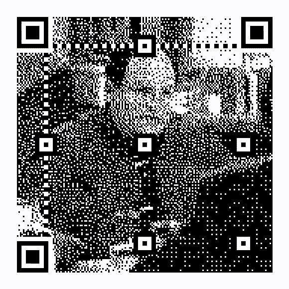
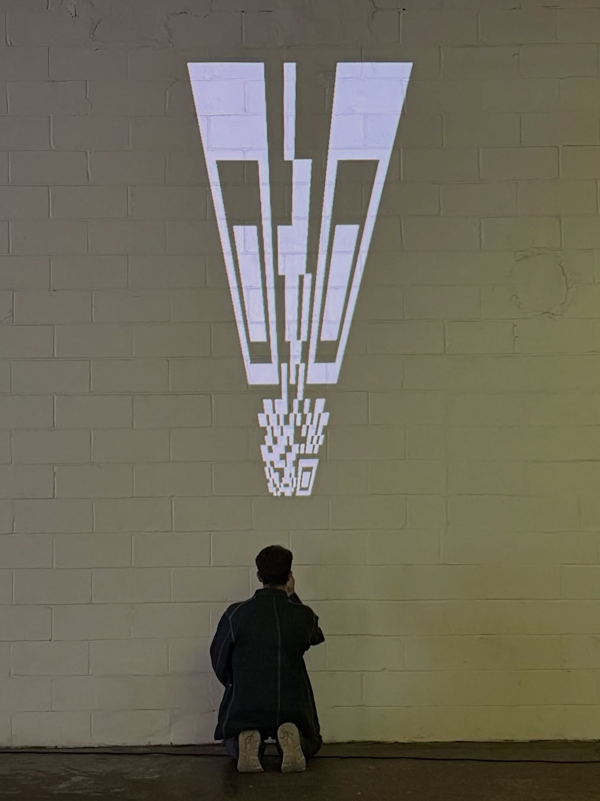
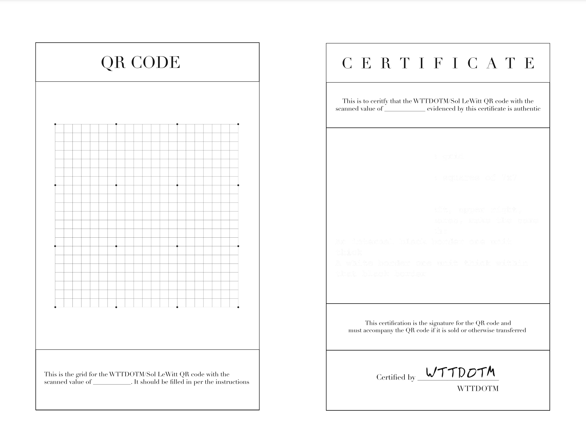

QR Codes, Projections, Prints
HTML, CSS, and JavaScript
2024-Present

I find QR codes conceptually fascinating because they are images that turn people into a medium. We as humans neither make nor understand QR codes, we merely shuttle them from one computer to another. QR codes turn people into a wire, an inert substrate, through which technology can communicate with itself. Weird no? Not only that, but QR codes also require a physical action of us, we have to pull out our phones to scan them. They exist as passive digital images, and yet prompt an active real-world response from us. Obviously, much art is made to elicit some kind of reaction from the viewer, but QR codes explicitly demand it and more often than not we fall in line. This is a weird and asymmetrical dynamic to have with an image, epsecially an explicitly technical one, and I think it provides very fruitful ground for exploring our relationship with tech. As AI increasingly makes decisions that route the paths of our lives, as our phones strengthen their place as the lens through which we interact with our environment, and as the lines between our own agency and the agency of our computational systems become blurrier by the day, QR codes offer a ubiquitous and recognizable starting point to explore what it means to have agency in a world dominated by technology.
Projection, Photography, Choreography
2025-Present

Sigils is a series of intentionally skewed QR codes that force viewers to unwittingly follow their will. Each command - "CROUCH" (shown above), "CRANE", "COME CLOSER", etc - is at once the indivdual piece's title, the action the viewer must do to scan it, and the text that appears on the screen once scanned.
As visually striking but initially unscannable QR codes, they naturally attract attention and interaction. It is only once the viewer contorts their body into the right angle, however, that they may successfully scan the code to scan the code, only to realize they have followed its command without question.
The works in Sigils are static choreographies, everyday symbols transmuted into unassuming images of suggestion and power. As the viewers travel around a room, finding themselves in directed along a series of movements, they are prompted to consider what is it about these codes that compels them into action, and how much of their own agency is controllable by an image.
Paper, Website
HTML, CSS, and JavaScript
2024

The Sol LeWitt QR Code Generator provides human-readable instructions for drawing your own QR code. QR codes - and scannable codes in general - are interesting in that they are part of a narrow genre of image which are made by computers, for computers, but which require a human in the middle. We neither make the codes nor read them, we just move them from one machine to another. As actors completely outside the processes of production or reception, QR codes reduce our function to one of pure transmission. We, suddenly, are their media.
In The Hitchhiker's Guide To The Galaxy, one of the main characters notes that the most aggressive thing you can do
to a computer is count upwards, thereby asserting that you can do their most basic function without them. Inspired
by this reinforcement of agency, this project offers humans a similar means of re-asserting their power. In an
homage to LeWitt's instruction-based Wall Drawings series, the generator gives people the opportunity to participate
in a practice of image-making that normally exludes them.